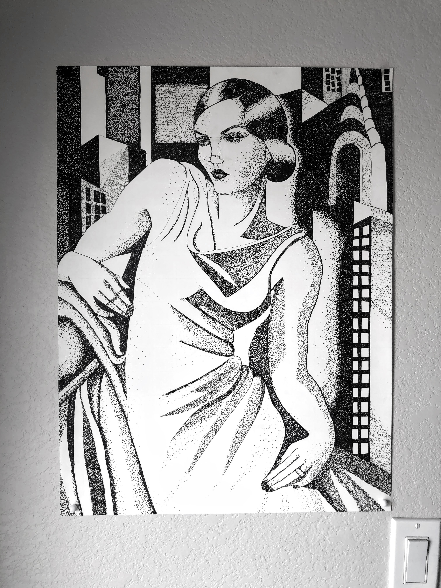
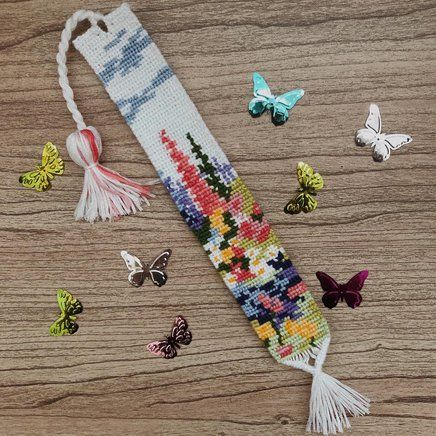

I really love to read. My favorite genres include fantasy, adventure, and romance. Reading allows me to escape from the real world. If you could choose to live in a world with dragons, would you?
I have a list of book recommendations here if you want to check them out.
Book RecommendationsI've been really into art ever since I was a kid. Sometimes It's hard to find the time to sit down and draw, but when you do, you can make some pretty amazing things
Most people would call this making freidnship bracelets, but I have taken it further to bookmarks and keychains. It's really all about following patterns. It's quite tedious but once you get the hang of it, there's no stopping you.
